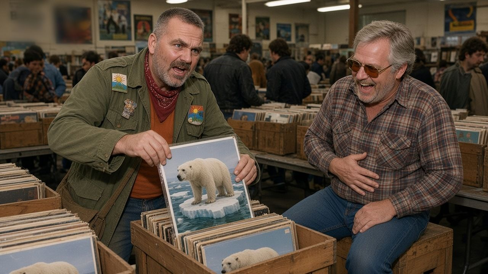

Vinyl desk · The interview ·
“I Was Supposed to Hate It”
Skip Calloway of San Francisco demanded vinyl records be banned to save the globe. Then his best friend — the drummer on Ace Frehley’s 1978 solo album — put the extra-heavy one on.

We met Skip in a cramped walk-up off Haight Street. The apartment looks like a campaign office: painted banners, a stack of blank cardboard, a jar of buttons, and no records at all. There is a clean rectangle on the floorboards where a friend has clearly just set down a turntable. Skip offers us a mug of something herbal and does not sit.
Skip, you wanted vinyl banned?
I did. Vinyl is just a plastic straw that plays music. I stood outside Comet Records in the rain and said so, through a megaphone made of oat husks. The collectors stepped around me. Someone asked if I was performance art.
What were your demands?
Groove Surrender Stations. You hand the records in, they melt them into one environmentally neutral bench, and people sit on it and think about what they’ve done. Turntables would be reclassified as spinning carbon altars. Anyone caught humming a B-side would get three weekends of whale sounds on a solar-powered speaker that only works in July.
Your best friend didn’t agree.
Anton. Anton Fig. He played drums on Ace Frehley’s solo record, the one from ’78. He is not impressed by my work. He told me if I wanted to save the globe I should start by walking to the shop, not shouting at it.
And Operation Silent Groove?
I went to the record fair at the hall off Stanyan at dawn and replaced every sleeve with a laminated poster of a sad polar bear. A dealer named Walt Bender noticed first. He laughed so hard he had to sit down on a crate of records. Then he pointed out that lamination is plastic. I had not… I had not thought of that.

“If you’re going to hate a record, at least hate a heavy one.”
You protested outside the shop as well?
I did. BAN VINYL. SAVE THE GLOBE. The collectors stood in the window and held up records at me like I was the floor show. The owner drank his coffee through a straw, which I thought was provocative.
And the café next door?
There were straws. I went in and took one out of a pensioner’s hand and told her it had killed nineteen turtles. Mrs. June Harbin, seventy-nine, ex-merchant sailor. She told me it was paper. I sniffed it. I confiscated it anyway. Paper comes from trees, and trees are people too.

How did that go down?
Someone in the shop dropped a needle on a record. Fifty collectors started nodding in unison. I tried to cover my ears, but the bass came in through my sandals. I left on my bicycle.
And then Anton came by.
He was in town. He came up the stairs that night with a record under his arm. I told him to take it back out. He said it was Ace Frehley’s solo record, and that it was pressed on extra-heavy plastic, and that if I was going to hate a record I should at least hate a heavy one. Then he put it on. He put on “New York Groove.”
Advertisement · fake

What happened?
I was supposed to hate it. It is a lot of plastic. It is also… I stood there with my badges on and my signs in the corner and I did not turn it off.
So you went back to Comet?
The next afternoon. Sunglasses. Cash. I asked for the Ace record. I told the shopkeeper it was for a protest art installation. He had already seen the signs. He wrapped it anyway.
And now?
I own one record. It is pressed on extra-heavy plastic. I have not surrendered the rest of the world’s vinyl. I have only failed at this one. On quiet evenings, if you walk past the walk-up, you might hear “New York Groove.” Louder than I would like to admit.
Any advice for our readers?
Support your local record shop. I am apparently a customer now. And if your best friend plays drums on a record, do not let him in with it. Or do. I am working on this.
Fine print: Skip Calloway, Walt Bender and Mrs. June Harbin are invented. Anton Fig is a real drummer, and he did play on Ace Frehley’s 1978 KISS solo album; the friendship, the San Francisco visit and every word we have him say here are an affectionate fiction. We show no likeness of him, and no artwork from that album. Vinyl is plastic, including the heavy kind. The worry about plastic is not invented, and neither is the climate. No records were banned in the making of this interview. Several straws were detained.
← Back to the true tales